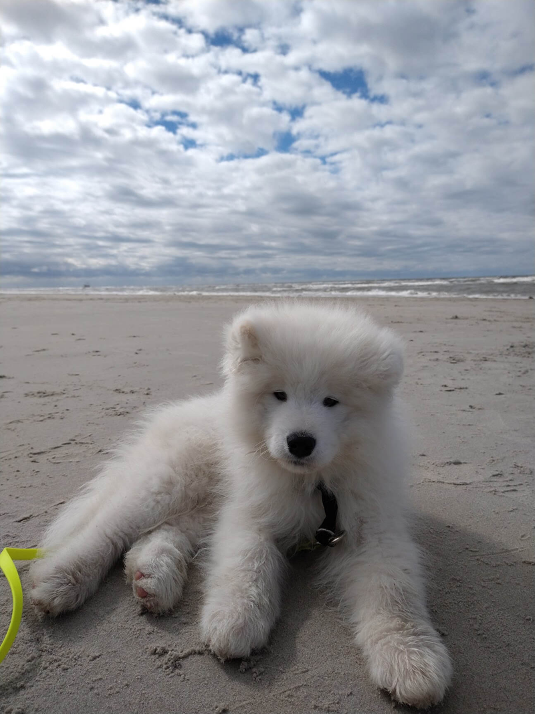
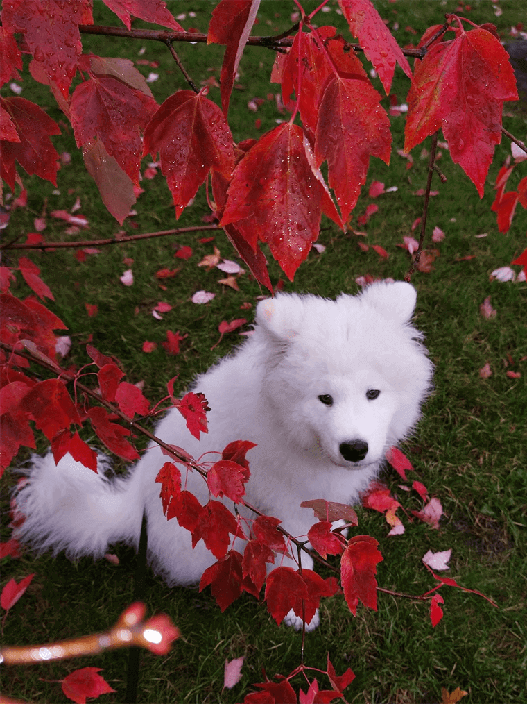
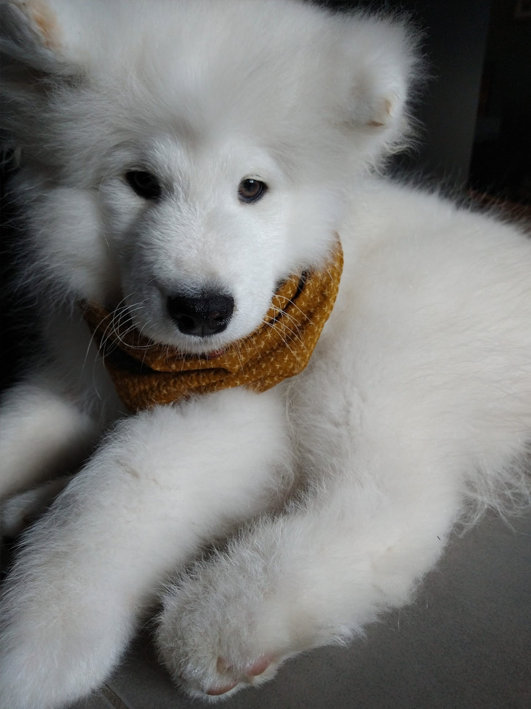
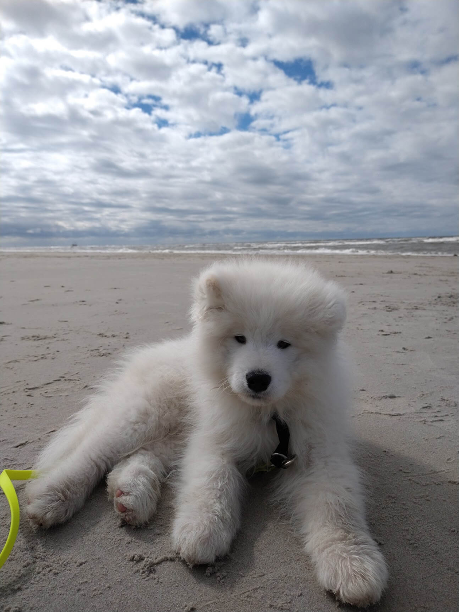
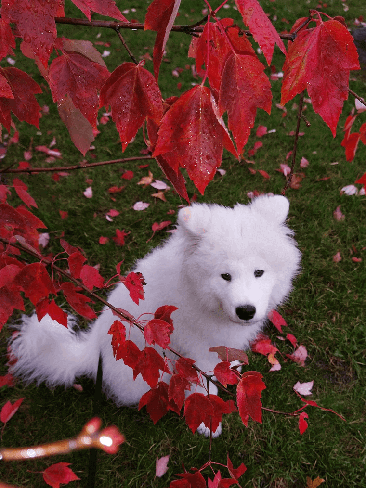
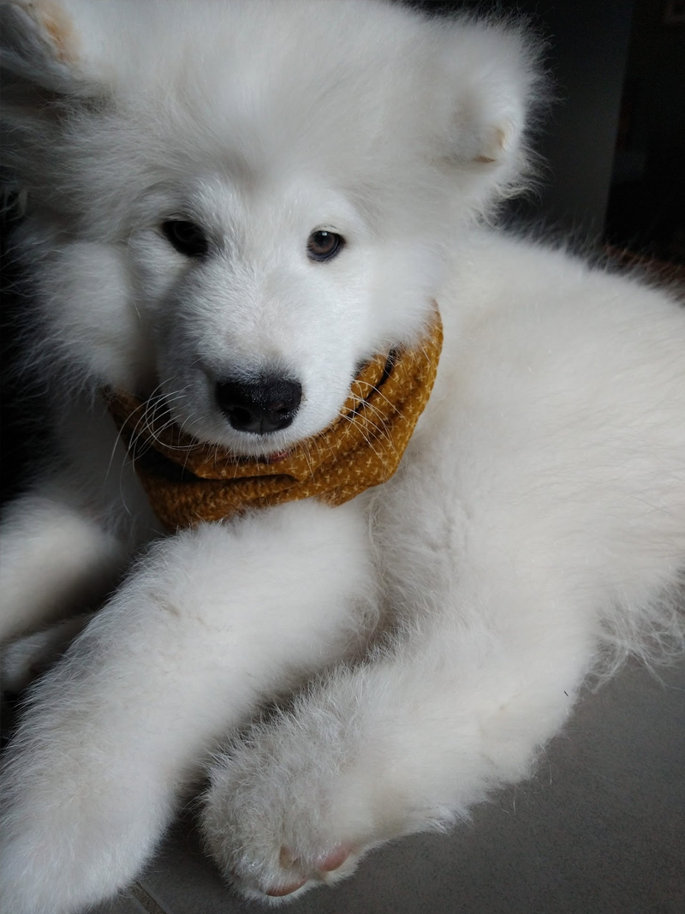

What is a portosystemic shunt?
A portosystemic shunt (liver shunt) is a defect in the blood vessels of the liver. It
compromises its filtering process, allowing toxins to go into
Buddy’s blood, poisoning him from the inside. It jeopardizes his
growth and brain function.
What
are Buddy’s symptoms?
Random diarrhea and vomiting, drinking lots of water, lots of
peeing. After a particularly big meal, or a protein-rich treat, he
would have hepatic encephalopathy: Bud would start behaving weirdly,
staring at walls, pacing blindly, head pressing - when it got really
bad he would start drooling uncontrollably, collapsing into the
floor and reaching a coma.
Is he
gonna be okay?
It pains us to say that we don't know. Being so young and from a
larger breed, the odds are not so much in his favor. At the moment
he is on a special diet and taking medicines (Lactulose, Amoxicillin
and Omeprazol), trying to get stable until his surgery appointment.
Surgery is risky, but it's the only option if we want him to have a
chance to live his normal life span.
Did you
talk to his breeder?
Yes. She was just as surprised as we were. It's a very rare genetic
disease in Samoyeds, so the preventive tests unfortunately are not
made in Germany. The gene carrier (Buddy's momma) won't be bred
anymore. The breeder has been very supportive and offered to take
back Buddy, which wasn't an option for us.
Don’t
you have insurance?
We do, but since it's a congenital disease, they are not paying for any expenses.

 




